Customer insights & ideation
Worked with three project managers and one lead designer to uncover insights and turn concepts into features that addressed customer behaviors and motivations.
One million songs, free for Prime members. Designing a streaming music benefit inside the Amazon Digital Music Store, and learning what happens when speed to market shapes the experience.
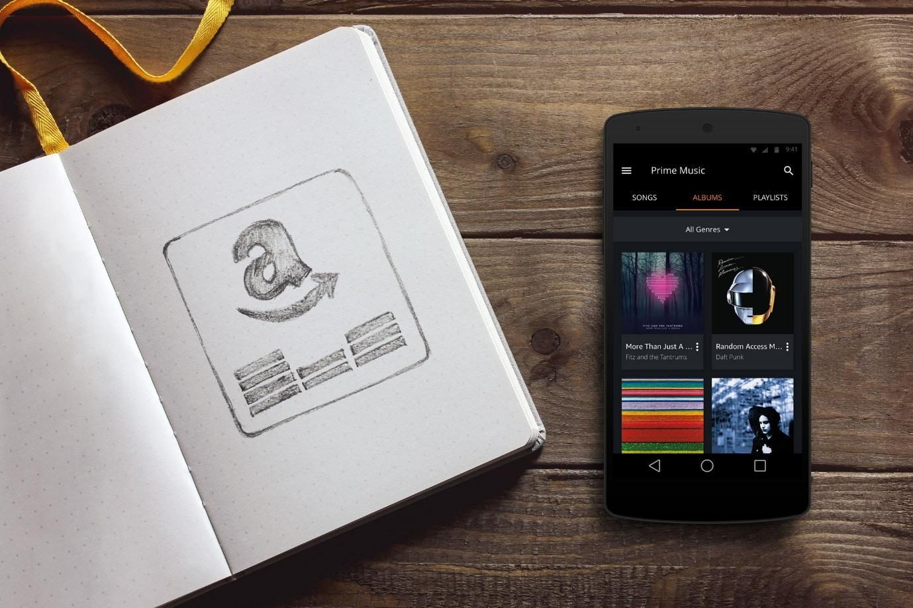
In compliance with my non-disclosure agreement, I have intentionally omitted and obscured any confidential information in this project.
I led the design of Prime Music for the Digital Music Store across Kindle Fire, Fire Phone, iOS, Android, desktop, and web. My focus was on customer pain points in browsing and discovery.
Worked with three project managers and one lead designer to uncover insights and turn concepts into features that addressed customer behaviors and motivations.
Built frameworks and prototypes to communicate the vision, design principles, and content strategy, to align teams and support decisions.
With my PM colleagues, defined the product, advocated for customer-centric goals balanced against business objectives, and prioritized and negotiated features for launch and post-launch phases.
Led design efforts and coordinated with seven platform designers and their PM counterparts to tailor features to each platform.
Executed designs for Kindle Fire, Android, iOS, and the iOS mobile Digital Music Store: user journeys, wireframes, prototypes, and design specifications.
Presented designs to executives, senior stakeholders, and Amazon teams throughout the project to gain buy-in and keep alignment with strategy.
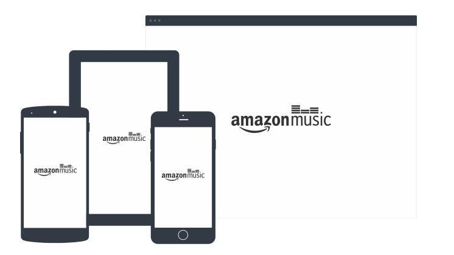
End-to-end, from discovery to delivery.
Music consumption had moved to on-demand streaming. Prime Music had to enter that market from inside a store built to sell downloads.
How could one store satisfy both Prime members and customers buying music, when their motivations and goals are very different? How would we use existing design patterns that were heavily optimized for selling music?
Digital music download sales had steadily declined, with a significant shift toward on-demand streaming, which now represents a large share of the music industry’s revenue. Music consumption was changing quickly, and that was a new challenge for Amazon.
Our task was to adapt and enter the highly competitive U.S. on-demand streaming market. Prime Music would offer a curated selection of one million songs and back-catalogue titles, available only to Prime members to stream and download. The goal was to build deeper, more meaningful relationships with Amazon customers.
To launch quickly, we were asked to design and build Prime Music inside the existing Digital Music Store and Music Library architecture. It was seen as the least risky option. The core assumption: millions of customers already visit Amazon, so extending the familiar “acquire, play, manage” model would get the product to market faster and at lower cost.
That early architectural decision shaped the quality of the customer experience, both in what we could create and in how we could meet user expectations.
Work was split into parallel workstreams for the Music Library and the Digital Music Store; I led design for everything related to the store. Each feature phase started on the reference platform, Kindle Fire. Once a feature was designed and approved, engineering began building it, while I adapted it with platform designers and moved on to designing the next feature.
Working backward from a fixed launch with aggressive scope meant design became part of an engineering-driven process. Sign-off milestones came from engineering estimates, and design had to fit into whatever remained.
The project touched every part of the music business, so I had to coordinate with, and get buy-in from, many teams, both co-located and distributed.
| Stakeholder | What they need | How I worked with them |
|---|---|---|
| Product management | A defined product, with customer-centric goals balanced against business objectives, and a launch versus post-launch split. | Three project managers. I sketched and white-boarded flows with a PM partner, and we prioritized and negotiated features together. |
| Design | A shared vision, design principles, and content strategy that each platform could tailor. | Worked with one lead designer. Led design and coordinated seven platform designers and their PM counterparts. |
| Engineering | Approved designs and specifications they could build against a fixed launch. | Their estimates set sign-off milestones. They built from the specs. A mini-hackathon later fixed critical playback issues found in beta. |
| Quality assurance | Documentation clear enough to write test cases. | CX specs, visual design specs and keylines, and motion documentation, two sets for each platform I owned. |
| Leadership | Confidence that the design matched strategy, and a way to approve it. | Presented to executives, senior stakeholders, and senior leadership throughout. Prototypes shared as videos were what got approval. |
| Music Library and other teams | A store workstream that still fit the library, and patterns that depended on teams outside music. | Parallel workstream to mine. The SWOT later named reliance on non-music teams as a weakness of building inside the store. |
“Managing feedback was even more challenging and felt like a swinging pendulum of viewpoints.”
The team spent a disproportionate share of the work debating design decisions when data could not easily be gathered. The result was agony, paralysis, and growing skepticism about instinct in the design process. I noticed this early and invested in documentation that explained design rationale. It was heavy work upfront, but it saved a lot of back-and-forth later. Design principles and a content prioritization framework made my decision-making visible and helped the team share the vision.
Prototypes, shared as videos, became the most effective way to get feedback from the team, consensus from stakeholders, and approval from senior leadership.
Embedding Prime Music in the Amazon Digital Music Store meant the experience had to work for everyone already in that store, not only for members coming to stream.
They get Prime Music at no extra cost and can stream, download, and add Prime-eligible songs, albums, and playlists to their library. Many felt they had already paid for the music through their membership.
They buy music in the same store. Their goals are about purchase, so the same screens had to keep selling while a second audience was trying to collect music for free.
They had bought songs, on Amazon or elsewhere, that belonged to Prime-eligible albums, and could complete those albums from their library.
They want music curated for them. This maps to the playlist finding: “I don’t have to think. Someone else put it together for me.”
They actively control and select what they hear, browsing by genre and searching for something specific.
Paid-tier customers who invest more in building their libraries and stream four times as much. Separately, customers overall listen to only 19% of their own music library, mostly catalogue songs rather than albums.
They used Kindle Fire, Fire Phone, iOS, Android, PC, Mac, and the web store on mobile and desktop. The design principles also asked us to design for the whole customer lifecycle: Unaware, Interested, First-time, Regular, and Passionate.
Primary studies I ran or led, plus the customer and market research planning drew on. The source does not say which secondary findings came from which method, so those are grouped together.
I hypothesized that Prime-eligible content should be prioritized differently when a customer does not have high purchase intent. With no qualitative data to support that, I ran a hierarchical card sort with eight participants to learn how customers think about categories of content and what matters most to them in the context of Prime.
In the think-aloud, participants ranked content by what felt predictable and trustworthy as relevant, then by what made them curious, and last by what they were skeptical about. Genre ranked first and Playlist second; Featured ranked last.
We surveyed casual listeners about how they identify with and choose playlists. Genre and mood were the strongest influences when choosing music. Activity was also reported. Genre is used to find music that matches a mood, or to exclude certain types of music. Customers think about moods and genres in heavily overlapping ways.
Two button concepts, $0.00 and +Add, were tested with 16 participants. Customers were delighted by the blue, could tell which content was Prime-eligible, did not understand +Add and thought it would charge them, and thought selecting $0.00 meant they would own the music. Detail is under Design Decisions.
Before launch we ran an extended beta and guerrilla user testing. The top risks were playback quality, performance, and stability; wayfinding; and playing and collecting music. These were the same issues we heard after launch.
After launch I led a research plan to get deeper qualitative insight into pain points and opportunities. We ran a diary study and usability testing, and tested the viability of future concepts. I shared the learnings as a customer journey map. It compared the aspirational experience with the pain points customers were hitting, and helped the team see how broken the Library and Digital Music Store model was.
Planning drew on what the source calls extensive customer and market research. Download sales had been declining, with on-demand streaming a large share of industry revenue. Customers use playlists to match a mood or an activity, such as relaxing, working out, cleaning, or reading. Customers listen to only 19% of their own music library, which is mostly catalogue songs rather than albums. Price sensitivity was what moved customers to on-demand streaming. Paid-tier customers invest more in building their libraries and stream four times as much. Customers expect Amazon to know them and serve personalized recommendations.
I also drew on published methods: reversing the polarity of an assumption, from Marty Neumeier’s Metaskills: Five Talents for the Robotic Age, and the Think, Do, Feel exercise from Gamestorming.
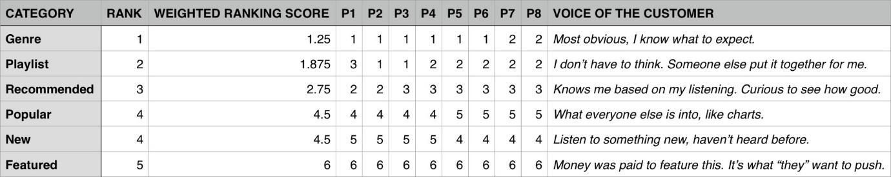
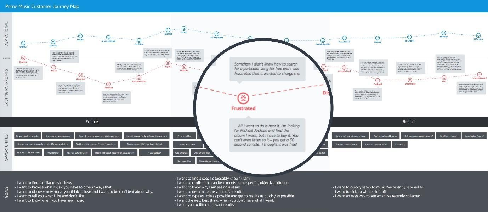
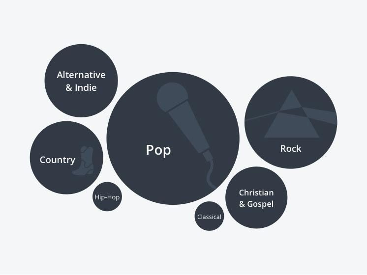
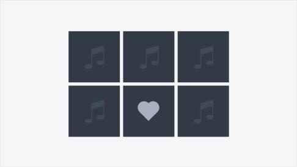
The source document has no feature-by-feature competitor comparison. What it does show is the market Prime Music was entering, and how the team positioned against it.
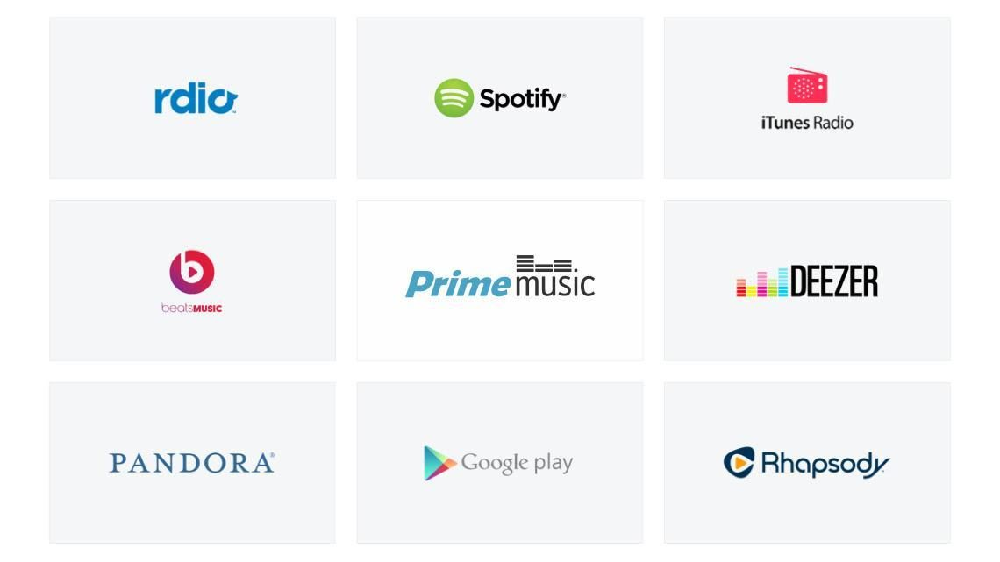
| Product | Strength | Gap | Opportunity |
|---|---|---|---|
| Prime Music | The best-value music service for Amazon customers. Prime Music joined free shipping, unlimited streaming of popular movies and TV shows, more than 500,000 free ebooks, and unlimited photo storage. A curated selection of one million songs and back-catalogue titles, to stream and download. | The business did not see itself as a standalone streaming service, but customers did, and they judged the experience that way. Not an exhaustive catalog. | Help finding music people will love from a selection they will actually listen to, rather than a “me-too” on-demand streaming service. |
| Rdio, Spotify, iTunes Radio, Beats Music, Deezer, Pandora, Google Play, Rhapsody | The streaming landscape the team was entering. The source does not record each service’s features, so this row is not a scorecard. | Threat named in the SWOT: clarity and aesthetics versus competitors. | Position against the set as value for Amazon customers, not feature parity with every peer. |
| Prime Instant Video and the Kindle Lending Library | In-house analogs customers already knew: Prime benefits you acquire, then use. | We assumed customers would follow the acquire-then-play path set by those products. That assumption turned out to be wrong for music. | Treat listening as its own behavior. A store pattern borrowed from video and ebooks did not match how people expected music to work. |
Representative personas composed from the customer segments, survey findings, and journey-map goals in this project. The source does not include formal research personas.
These four are representative composites, not people from a persona study. Names stand in for the segments the work actually described.
Casual listener. Puts music on for a mood or an activity such as relaxing, working out, cleaning, or reading. “I don’t have to think. Someone else put it together for me.”
Goals. Music chosen for her, with as little typing as possible. Frustrations. Choosing between genre and mood when she thinks of them as the same thing. Needs. Prime Playlists and one combined filter list.
Actively controls and selects what he hears. Genre ranked first in the card sort because it felt predictable, which is the browse path this segment depends on.
Goals. Find familiar music he loves, discover music Amazon thinks he will love, and get to results quickly. Frustrations. Could not re-find music he had collected, and did not expect to look for it in a store. Needs. Genre-led browse and a way back to recently played music.
Represents the paid-tier customers who invest in building a library and stream four times as much. Customers overall listen to only 19% of their library, mostly catalogue songs rather than albums.
Goals. Add Prime-eligible songs, albums, and playlists, take them offline, and mix them with her own collection. Frustrations. Add-to-library felt laborious, and owning some tracks on a Prime album did not make the rest easy to finish. Needs. Complete-your-albums and a library she can actually play.
Already a Prime member, standing in the same Digital Music Store as someone who came to buy. Feels the music is already paid for.
Goals. See what is Prime-eligible and collect it without a surprise charge. Frustrations. Buy buttons on music that already felt paid for, and a $0.00 button beta participants read as ownership. An anonymous beta participant asked why it could not be a standalone section. Needs. A Prime-only place to listen, separate from purchase.
The journey map listed customer goals by stage, including: “I want to find familiar music I love,” “I want to discover new music you think I’ll love,” “I want to type as little as possible and get to results as quickly as possible,” and “I want to quickly listen to music I’ve recently listened to.”
Nine principles made the calls visible. The hardest ones were what to lead with, how to say “free” inside a store, and what to change when beta said the model was wrong.
A set of nine principles made my decision-making visible to the team.
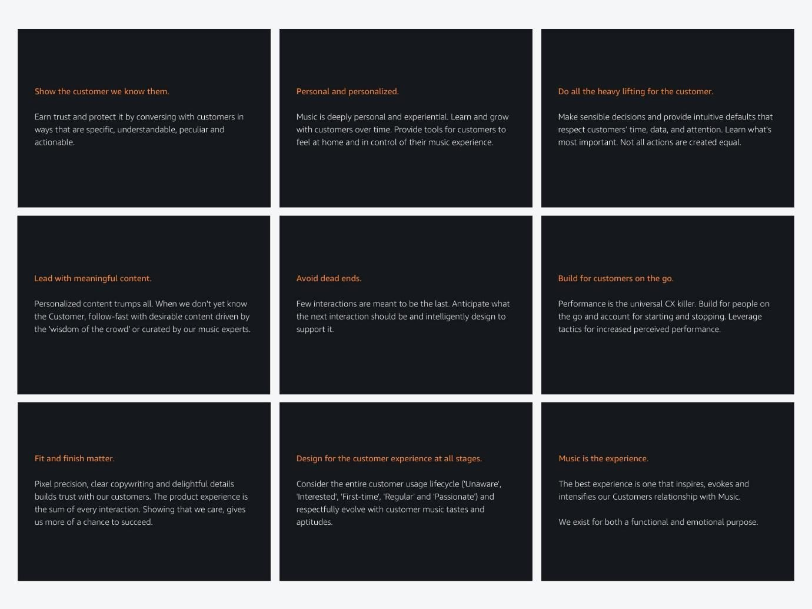
Decision. Combine playlists and genres into the Prime Playlist browse experience, then pair the category ranking with feasibility scores for the rest of the browse structure.
Why. The card sort showed we needed to prioritize playlist content, and that genres were a familiar way to browse. Genre ranked first, Playlist second, Featured last.
Trade-off. Customer rank did not automatically become the information architecture. Feasibility scores decided what could actually ship in the structure.
Decision. Plan content as the opposite of a bargain bin, and tell a story behind the music.
Why. I imagined the worst possible perception of Prime Music: the bargain bin in a record store, discounted music nobody wanted. Listing its traits, using the reverse-polarity method, gave me the opposite principles. Music nobody listens to became a popular, quality selection. Music by has-beens became timeless classics. A mass of no value became good value. Painful digging became personalized, curated, timely, and topical. Music given away became limited, scarce, and exclusive.
Trade-off. Campaign composites got the team excited about that future, even though many concepts weren’t feasible for launch.
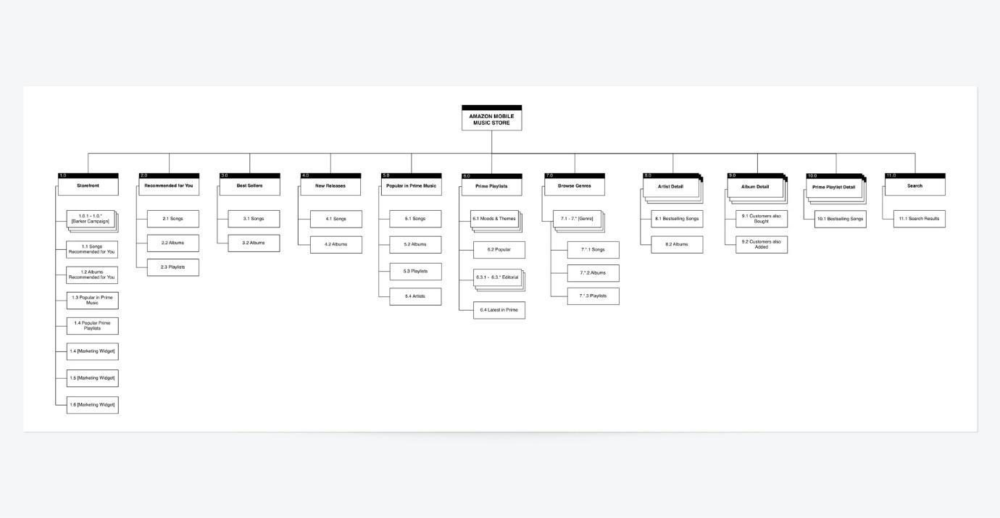
Decision. Prime Playlist browse uses a single filter list for genre and mood together.
Why. Genre and mood overlap so much in customers’ minds. One list reduces upfront decisions, removes the need to switch between genre and mood, and carries a stronger information scent.
Trade-off. The survey named genre and mood as two influences. Separate lists would have mirrored that wording and forced a switch people do not actually make.
Decision. Model Prime Music on discovering and buying music in Amazon’s store, and let Prime members purchase Prime-eligible music for free.
Why. The Store-plus-Prime direction felt wrong from the start, but the decision was made. Instead of catastrophizing, I analyzed the approach’s strengths: a familiar context, existing browse and search, a familiar taxonomy, one destination, and customers who already use the store. The next challenge was showing which content was Prime-eligible and how to collect and play it.
Trade-off. The SWOT weaknesses and threats stayed in the design: confusion with physical shopping, hard to find what is free, reliance on non-music teams, clarity and aesthetics versus competitors, accidental purchases, and patterns that were hard to extend.
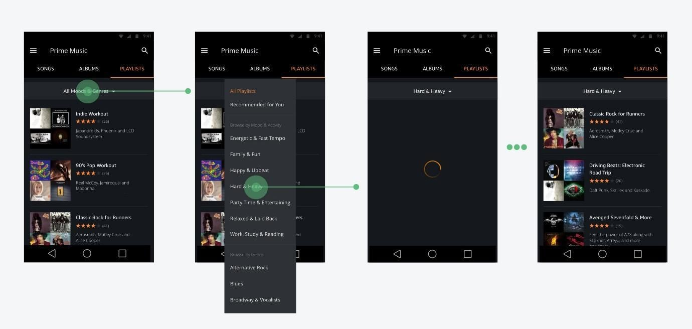
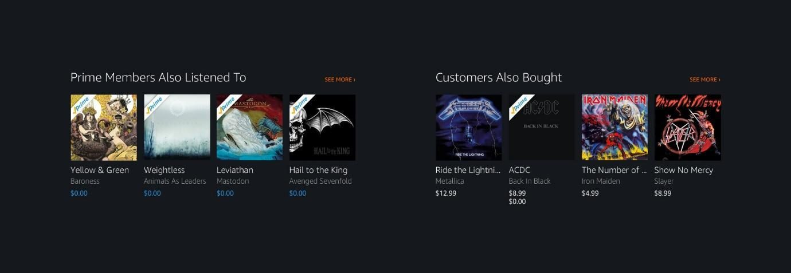
Decision. Ship the blue $0.00 button, not +Add.
Why. This small button was among the team’s most debated decisions: what it said, what it looked like, and what it did. I started with the Think, Do, Feel exercise, working backward from the aspirational thoughts, feelings, and actions I was designing for, and narrowed to two concepts: $0.00 and +Add. Testing with 16 participants found that customers were delighted by the blue, could tell which content was Prime-eligible, did not understand +Add and thought it would charge them, and thought selecting $0.00 meant they would own the music.
Trade-off. The ownership confusion surprised me and showed how much the store context shaped perception. Under pressure to move on, I went ahead with $0.00 because it would be easy to pivot if needed. Free was clear. Ownership was not.
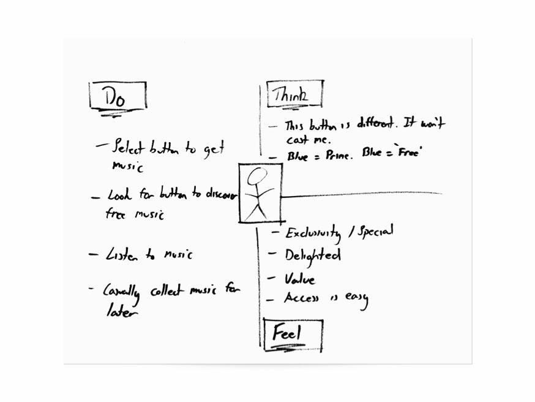
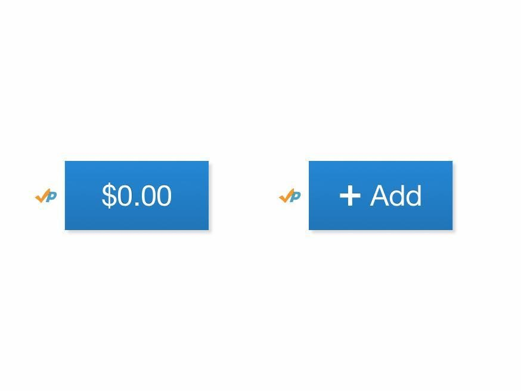
Playback. Beta customers said Prime streams took too long to start and often stopped. Performance and reliability were the product experience. A mini-hackathon fixed the critical issues.
Wayfinding. Customers struggled to find Prime Music, felt lost, and could not re-find music they had collected. They didn’t expect to look for it in a store; “renting” music did not exist in their minds. We pulled the Prime sections out into their own area in the top-level navigation. It tested well for discoverability, but the items were really deep links into the store, so customers wandered into other store areas without knowing why. The team was divided on this band-aid, but accepted it for launch.
Playing and collecting. Customers valued add-to-library but found it laborious and confusing. The team wanted to add playback to the store. I argued against it: stretching retail patterns optimized for selling would clutter the experience for everyone and ignore the complexity of playing, downloading, and managing music. Digging deeper, customers were also frustrated by seeing purchasable, non-Prime music. Our designs said buy, buy, buy, while customers felt they had already paid. A pure music experience needed a different strategy and a much larger effort.
Trade-off. The navigation change made Prime findable and still dumped people into the store. Playback inside the store would have been faster to bolt on and worse for both buyers and members. The standalone listening experience waited until after launch.
“Why can’t it be a standalone section? Why do I have to see buy buttons everywhere?”
Anonymous beta participant
“It is cumbersome to play selected music. When you click on ‘add to library’ from the initial Amazon music screen, a user would logically think he/she could play the music. Unfortunately, that is not the case.”
Anonymous beta participant
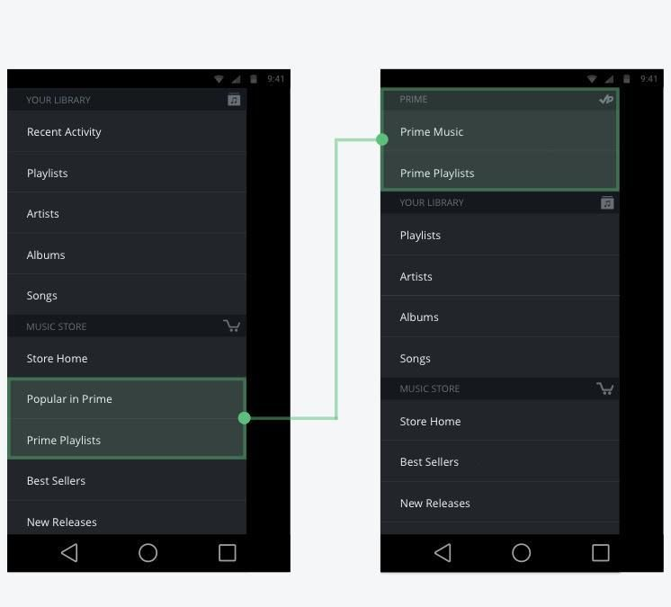
Every feature phase went through requirements, consensus, approvals, detailed specs, and handoffs. Prototypes, often shared as video, were how the team decided.
A clickable HTML/CSS/JS recreation of the key Prime Music screens and flows: browse, moods and genres, album and playlist detail, add to library, Now Playing, library, navigation, and the Prime upsell. It uses placeholder artwork and example content. Design prototype by Suvarna Myneni, for portfolio purposes, not an Amazon product.
I sketched and white-boarded concepts and flows with my PM partner, then went straight into high-fidelity comps. That was practical because I was working with many existing patterns.
Next I sliced the comps into a prototype. Early on, I prototyped only the highest-risk areas. I shared prototypes as videos and reused them for usability testing. They were the most effective way to get feedback from the team, consensus from stakeholders, and approval from senior leadership.
Once the team had a working prototype, we put it in customers’ hands. The extended beta and guerrilla testing before launch surfaced the top risks: playback, wayfinding, and playing and collecting music.
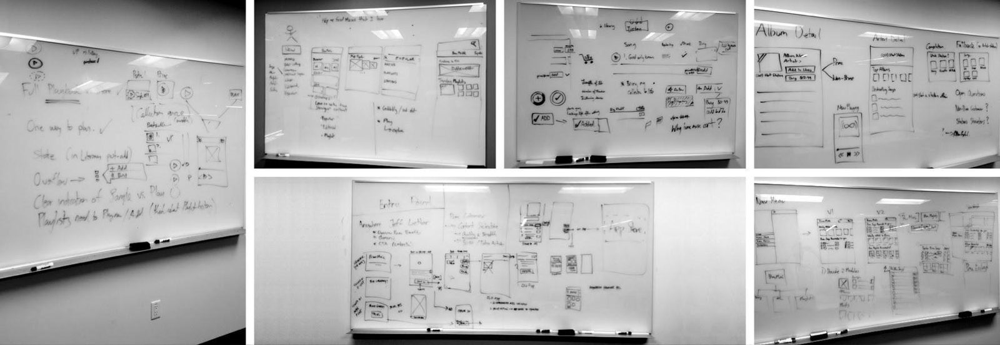
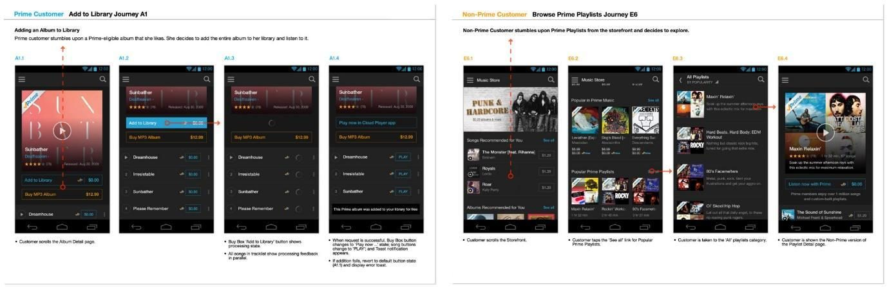
The project's own visual language, shown as a specimen.
I produced six sets of documentation, two for each platform I owned, so engineering knew the requirements and QA could write test cases: a CX spec (requirements and customer journeys), a visual design spec and keylines (the design system), and motion documentation (animation keyframes for micro-interactions). This documentation needed the most rework of anything in the project and was the hardest to keep current.
The product UI below is the Prime Music specimen: dark surfaces, a blue Prime button, an orange purchase button, and a grey In Library state. Swatches use the hex values from the prototype, which follows the visual design spec.
Blue means Prime-eligible and free. Orange is purchase. Grey is already in the library.
$0.00 + Add $1.29 In Library
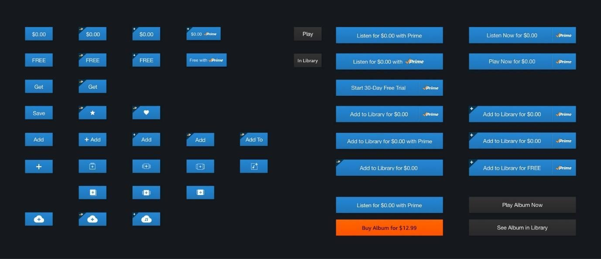
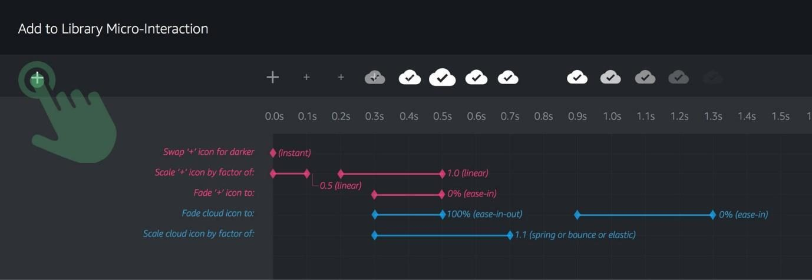
App designs for Kindle Fire and Android mobile, plus core screens from the service.
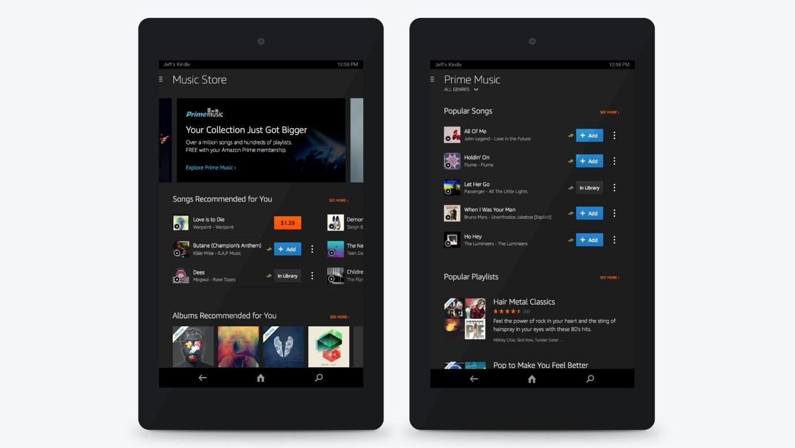
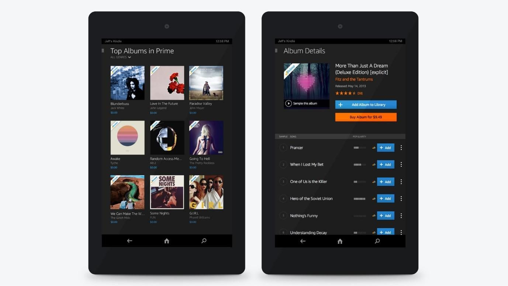

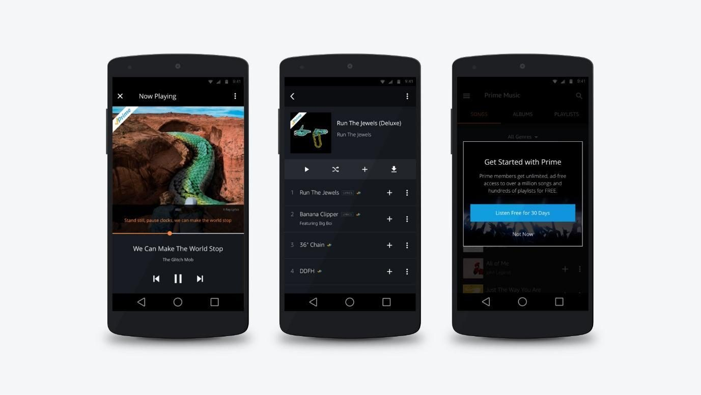
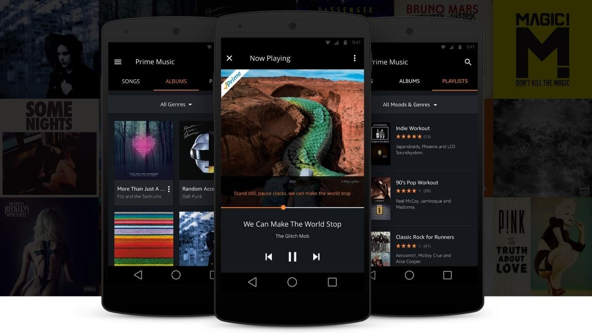
Prime members can listen to and download from more than one million songs, hundreds of curated playlists, and personalized ad-free stations. Add any Prime-eligible song, album, or playlist to stream, take offline, or mix with your own collection.
If you own songs from a Prime-eligible album, find the remaining tracks from your library.
Prime Playlists for moods and activities, built by Amazon’s music experts.
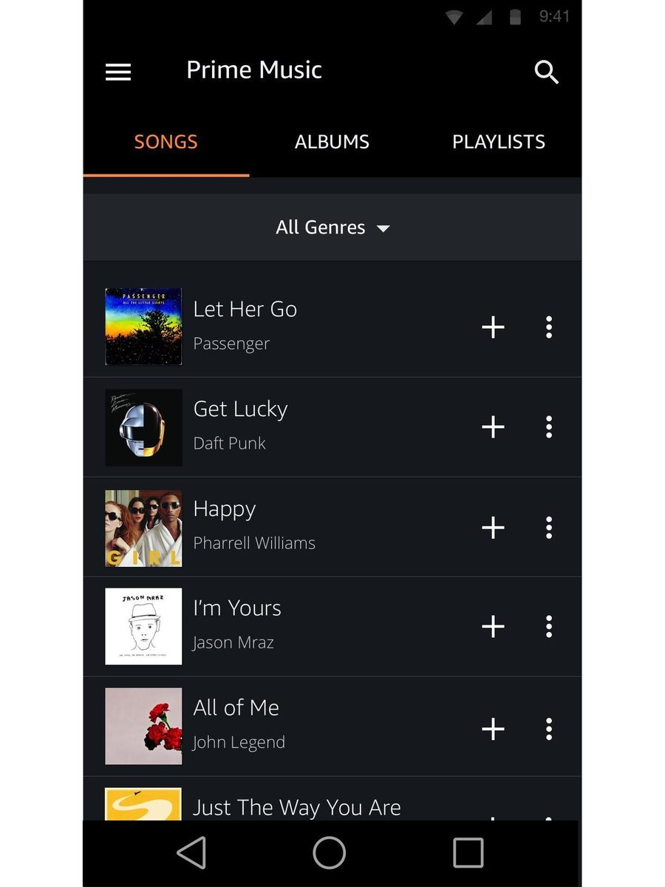
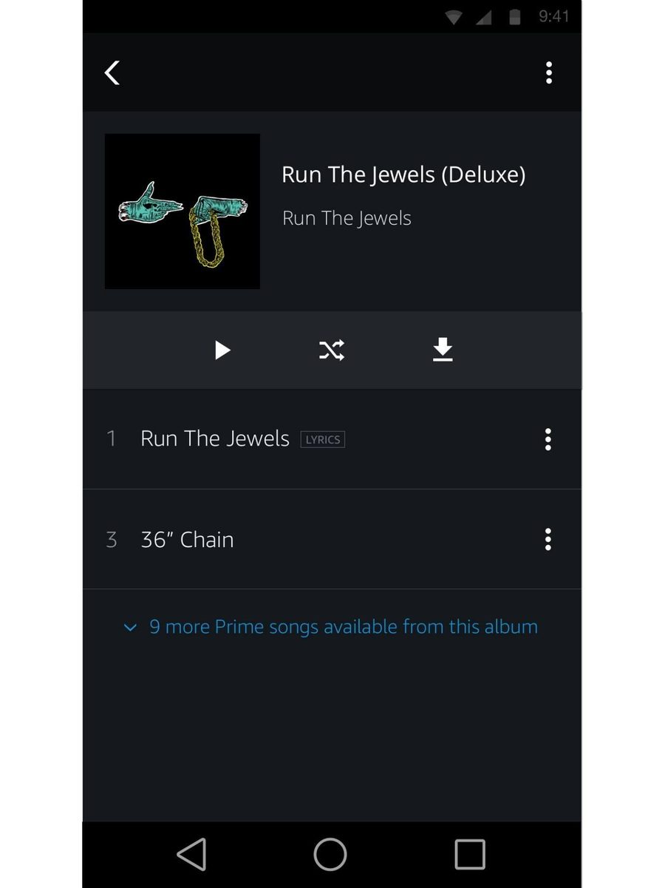
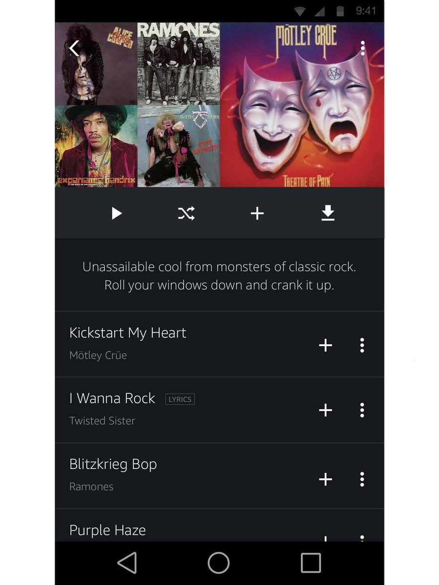
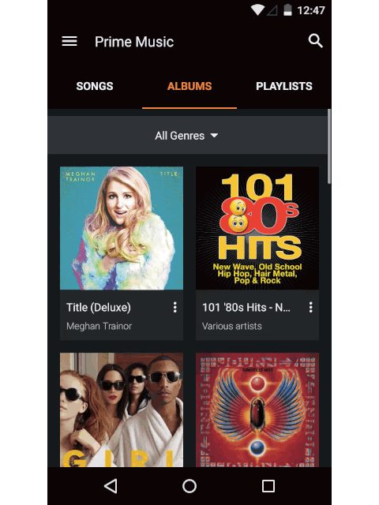
The launch held. The model did not. Follow-up work produced the Prime-only area the beta had asked for.
We began rolling out the updated Prime Music to Kindle Fire, iOS, Android, PC, Mac, and the Amazon Digital Music Store on mobile and desktop. The launch went off without a hitch, which was remarkable given the scale and complexity of the deployment.
Post-launch feedback mirrored what usability and beta testing had already found, and there was no quick fix. With launch pressure gone, we had the space to do it right. The diary study and journey map built empathy across the team and became a breakthrough. After further design and development, we shipped the first of many updates: a Prime-only area optimized for Prime members and fully separate from the Digital Music Store. We had finally created the minimal desirable experience for customers.
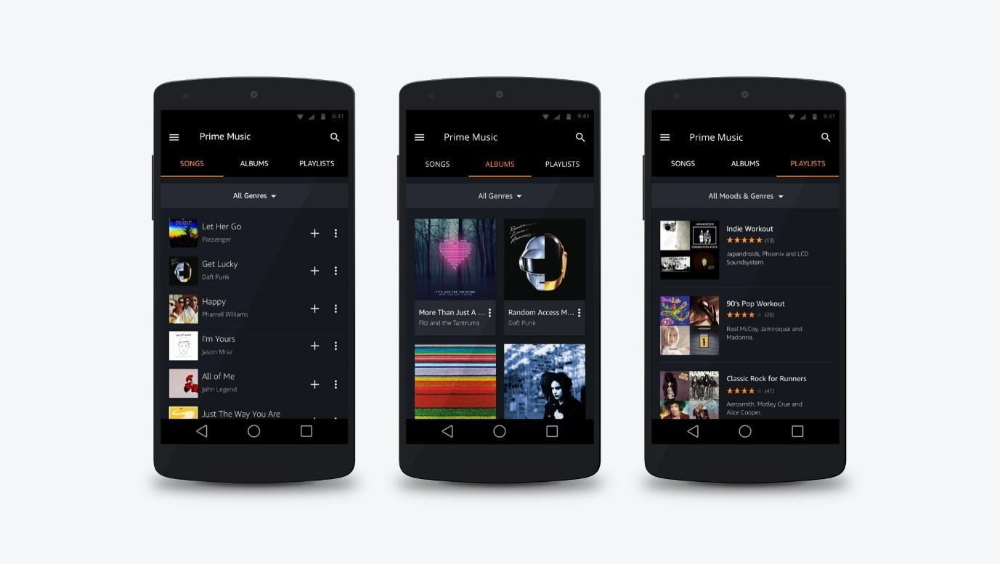
“Great update. You have fixed my one gripe about the app. Now I can stream without adding to my library. Thanks for listening to your customers.”
“Prime Music makes my Prime membership so much better! Amazon’s big data team did a great job understanding my music taste.”
“So many great songs. Think my Prime membership just paid for itself! Now I just have to get all my mobile devices loaded up!”
“I love this app! It frees up storage space on my phone, but allows me access to TONS of free music choices since I am a Prime member.”
Your customers won’t forgive you because it was quicker and cheaper to build it that way. Bias for action turned into a bias for delivery. We measured outputs instead of outcomes, and let “how quickly can we build it?” define what we built. If we had asked “are we building the right thing?” as often as “will we be ready to launch?”, we would have launched a more reliable, intuitive, and polished product. Customers should have defined viability before the technology and the launch plan did.
At launch I knew where the usability issues and missing features were, and how much effort had gone to non-critical features at the expense of performance and reliability. My dissatisfaction wasn’t perfectionism but an insistence on quality, which is the responsibility of the whole organization. I’m proud of what I accomplished for Amazon: the launch exposed what was broken in the product and in how we worked, and left the team better placed to learn. As Amazon says, it’s still Day One.
After the redesign of Prime Music launched on iOS and Android, the median number of active customers rose by 71%. Despite that rapid growth, engagement, retention, adoption, and acquisition metrics improved.
These are the figures reported in the source document. It does not give the measurement period, baselines, or method, and confidential details are omitted under NDA.